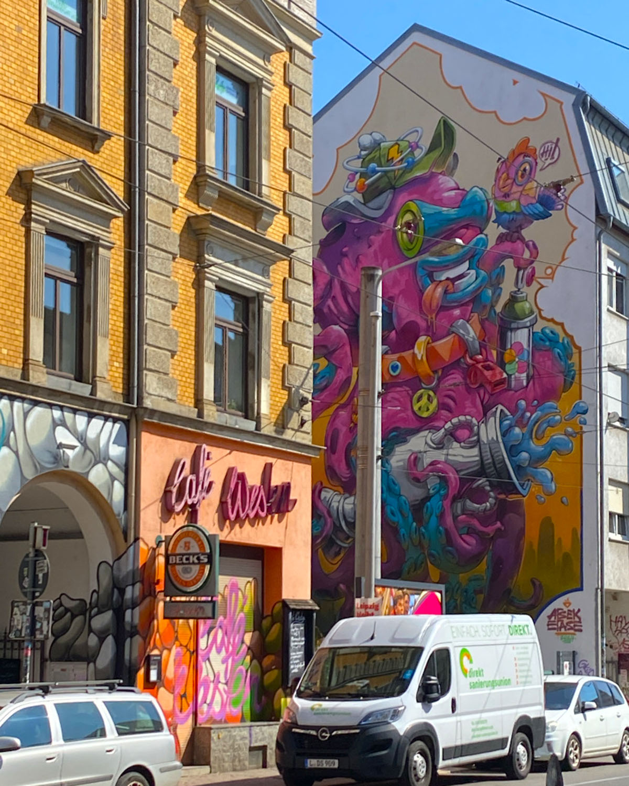

Hier habe ich mich mit dem Körper und der Haltung von Menschen befasst.
Fritz von Uhde "Aktstudie / Study of a nude", 1880/1905Franz von Lenbach "Weiblicher Halbakt / Female half-nude", 1897
Durch die Skizze sind mir die Proportionen und die Haltung deutlicher geworden.Zudem sind mir die kleinen Details, wie beispielsweise der hell und dunkel Kontrast, durch das zeichnen mehr aufgefallen.
Max Slevogt "Selbstbildnis mit Palette / Self-Portrait with Palette", 1906
Zwei unterschiedliche Augenfarben (Iris-Heterochromie)
Max Liebermann "Rast in den Dünen / Rest in the dunes", 1896Wilhelm Leibl "Bildnis der Frau Apotheker Rieder / Portrait of the pharmacist's Rieder wife", 1893
Viele verschiedene Möglichkeiten zu drucken.Beim Workshop durften wir selber ein Wort oder einen Satz drucken, und konnten dem Prizip des druckens somit näher kommen.
Mein Ergebnis aus dem Workshop.
Eyecatcher
Viele Poster mit kräftigen Farben, jedoch ist mir dieses am meisten aufgefallen.Eine kaputte Treppe wurde mit Legosteinen repariert.
Durch die Spiegelung schaut es so aus, als würde sich das Gebäude verdoppelt haben.

Das Grafiti ist mir direkt am ersten Tag aufgefallen, sowie auch viele andere.
Eine Statue die sich mitten in der Stadt befindet, und drei verschiedene Männer darstellt.
Favoriten
Beim betrachten dieser Plastik findet man immer wieder neue Details, die man davor gar nicht gesehen hatte.
Die Farben und Linien lassen es wie ein großes Feld aussehen.
Max Klinger "Der Tod am Wasser (Der pinkelnde Tod) / Death by the water (The peeing death)", 1881Jan Davidsz. de Heem "Vanitasstilleben / Vanitas Still Life", 1628
Das war mein Archiv von der Exkursion in Leipzig. Danke fürs reinschauen! :D